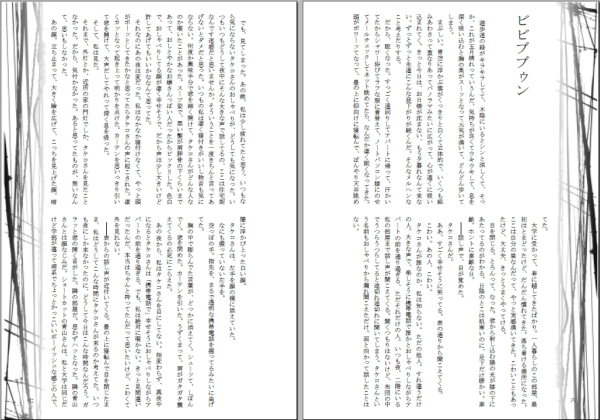

鉄錆風味歪夢 自選集
2016.07.17 電子書籍版をAmazon Kindleストアから刊行開始しました。
ご紹介
以前サイトで公開していた掌編集「鉄錆風味歪夢」からの自選集です。2008年11月に、第七回文学フリマにて初頒布しました。
夢野久作〈猟奇歌〉をモチーフとしています。原稿用紙で数枚程度の、ごく短い話を収めています。
恐怖色の強い作品を集めた〈猟奇編〉と、幻想味のある作品を選んだ〈寂滅編〉の二冊があります。また〈寂滅編〉には短編小説「熱病」を併録します。
2016年７月に、電子書籍版をAmazon Kindleストアから刊行開始しました。
よろしければ以下のリンクからご購入ください。
試供品
サイト公開当時のものから、以下に三作品を試供品として公開します。書籍版、電子書籍版では推敲を加えるなどしています。
これまで文学フリマなどで頒布してきた書籍版のほうは、今後の頒布予定はありません。
書籍版の本文サンプルは以下のとおりです。

収録内容
- 鉄錆風味歪夢〈猟奇編〉
- ビビブブゥン
- おやすみはおしまい
- 闇に転げる
- ピアス病
- 邪眼
- 暗闇バス
- 就寝時前に服用のこと
- 床地図
- 水難の夢
- 小さな扉
- 無名墓碑銘
- 灰を吐く
- 押入一人
- みえない
- 残夢
- 心の秘密
- 鉄錆風味歪夢〈寂滅編〉
- さようならの日
- 誰かがみている
- ネジ雨
- 業火の記憶
- 黒い川面
- 濁り水の報せ
- 冷たい海
- それはひどく雨の降る晩で
- 鈍痛
- さいなむ夜の懐に
- 桜雨の夜
© 2008 ODA MAKIO All rights reserved.